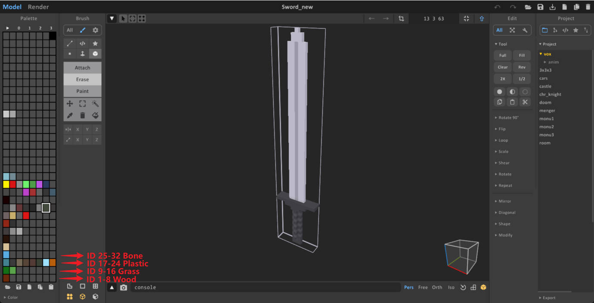
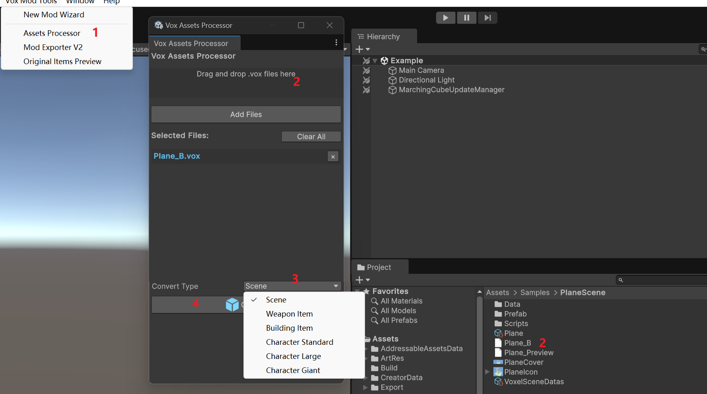

MagicaVoxel is a free, lightweight 8-bit voxel art editor and interactive path tracing renderer. It is the primary tool used for creating voxel models for Voxel Playground.
You can download MagicaVoxel from the official website: https://ephtracy.github.io/
Use MagicaVoxel to create your 3D models and save them as .vox files. These files are used as the source for voxel data in your mods.
In Voxel Playground, the physical properties of a voxel (such as hardness, flammability, and visual type) are determined by its Material ID. When you create a model in MagicaVoxel, the game uses the Color Palette Index of each voxel to assign its Material ID.

The mapping divides the palette into groups of 8. Every 8 colors in the MagicaVoxel palette correspond to 1 Material ID.
The formula used by the game is:
Material ID = Ceil(Palette Index / 8)
Note: The maximum supported Material ID is 31. Any palette index that maps to a value higher than 31 will be clamped to ID 31.
If you need to adjust Material IDs after importing—for example, to fix mapping errors or batch-replace materials—you can use the Voxel Data Editor. It allows you to visualize and reassign IDs directly in Unity without modifying the original MagicaVoxel file.
Below is a quick reference for the first few ranges. For the complete list of Material IDs and their specific properties (Hardness, Metallic, etc.), please consult the Material ID and Visual documentation.
| Palette Index Range | Material ID | Material Name |
|---|---|---|
| 1 - 8 | 1 | Wood |
| 9 - 16 | 2 | Grass |
| 17 - 24 | 3 | Plastic |
| 25 - 32 | 4 | Bone |
| 33 - 40 | 5 | Skin |
| 41 - 48 | 6 | Dirt |
| 49 - 56 | 7 | Stone |
| 57 - 64 | 8 | Brick |
| 65 - 72 | 9 | Concrete |
| 73 - 80 | 10 | Asphalt |
| 81 - 88 | 11 | Crust |
| 89 - 96 | 12 | Metal |
| 97 - 104 | 13 | Glow |
| 105 - 112 | 14 | Glass |
| 113 - 120 | 15 | HarderSkin |
| 121 - 128 | 16 | HardSkin |
| 129 - 136 | 17 | FistSkin |
| 137 - 144 | 18 | Armor |
| 145 - 152 | 19 | Water |
| 153 - 160 | 20 | EnergyShield |
| 161 - 168 | 21 | PierceBullet |
| 169 - 176 | 22 | CarbonSteel |
Once you have created your .vox models, you need to import them into the ModToolkit Editor to use them in your mods. This process involves the Asset Processor.
.vox files.
After conversion, the system generates a prefab for your model. This prefab will typically have a VoxelObjectProxy component attached, which handles rendering, physics, and persistence.
When creating a complex scene file in MagicaVoxel that contains multiple objects, you can control how each object is imported into the game by adding specific prefixes to their names in the MagicaVoxel "World" editor.
The importer checks these prefixes to assign the correct physical properties, collision layers, and behaviors.
| Prefix | Type | Description | Properties |
|---|---|---|---|
A_ |
Static Environment | Used for the main static geometry like floors, walls, and terrain. | • Layer: Building • Tag: "Floor" • Physics: Kinematic (Immovable) • Destructible: No |
B_ |
Dynamic Prop | Used for free-moving objects like crates, barrels, or debris. | • Layer: Item • Physics: Dynamic (Affected by gravity) • Destructible: Yes |
C_ |
Strong Connected | Used for objects that need to be firmly anchored to the world (e.g., fixtures). | • Layer: Item • Physics: Dynamic • Destructible: Yes • Special: Adds an UnyieldingArea component with a large collider to stabilize connection. |
D_ |
Weak Connected | Used for hanging or jointed objects (e.g., lamps, signs). | • Layer: Item • Physics: Dynamic • Destructible: Yes • Special: Adds an AttachmentPoint (facing down) and configures a joint. |
If an object name does not start with any of the specific prefixes (e.g., MyTable, Chair):
Recommendation: Always use
A_for ground and structural elements to ensure they are recognized as "Floor" for navigation and physics interactions. UseB_for any object you want the player to interact with physically.